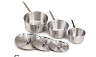
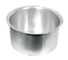
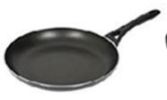
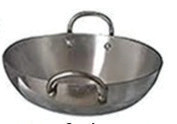
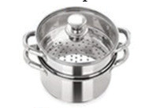
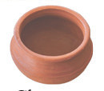
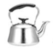
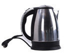

Kitchen equipment
Kitchen equipment refers to various tools, appliances and utensils used in food preparation, cooking, and other culinary tasks. Having the right kitchen equipment can make cooking more efficient and enjoyable. There are large, small and labour-saving pieces of equipment. Large pieces of equipment include cookers, refrigerators and cupboards. Small pieces of kitchen equipment are grouped as:
- (i) wooden equipment such as chopping boards, wooden spoons, pastry boards and rolling pins;
- (ii) serving equipment such as glasses, cups, serving spoons and plates;
- (iii) measuring equipment such as measuring scales, jugs and spoons;
- (iv) baking tins such as patty tins, cake baking tins, sandwich baking tins and loaf baking tin;
- (v) cutlery items such as table spoons, forks, dessert spoons and tea spoons; and
- (vi) knives such as chopping knives, bread knives, paring knives and vegetable knives
Labour-saving equipment are appliances that help one to speed up food preparation, cooking and serving to save time and energy. These devices are intended to increase efficiency and productivity, allowing people to accomplish tasks more quickly and with less physical effort. Some examples of labour-saving equipment in the kitchen include a microwave oven, food processor, dishwasher, electric mixer, blender, deep fryer, rice cooker, pressure cooker, electric kettle and sandwich maker. Figure 3.4 shows some kitchen equipment.







